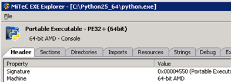

64-bit Mapscript for Python on Windows
- date
2010-08-03 10:17
- author
admin
- category
mapserver, python
- tags
64bit, gdal
- slug
64-bit-mapscript-for-python-on-windows
- status
published
Tamas Szekeres maintains a site with many different compiled versions of MapServer at http://vbkto.dyndns.org/sdk/ (the site can occasionally be overloaded or down). These are compiled daily direct from the source. It is a veritable Aladdin’s cave of treasures ?” especially if you are installing on a Windows Server, and even more so if you are installing for 64bit.
It gets even better though! Included in the installation are the latest SQL Server 2008 driver, 64 bit GDAL, and MapScript Python bindings. MapScript allows MapServer functions and classes to be scripted in a variety of languages.
As Python is becoming ubiquitous in the GIS world (opensource and proprietary), if you aren’t familiar with PHP then You can download the zip file and extract to a folder on your machine, in the example below I used C:\ms4w64 (old habits die hard!).
Install Steps
1. Add C:\ms4w64\bin to your system PATH environment variable (right-click on My Computer, select Properties, Advanced, Environment Variables, then in System Variables select PATH and edit. Remember to put a semi-colon ; between folders in the path.

Adding this folder to your PATH will allow Windows to find the MapServer and GDAL DLLs used by Mapscript.
2. Now we want to make the Mapscript Python module available in Python. There are a couple of options here. I took the files from C:\ms4w64\bin\ms\python and copied them into C:\Python26\Lib\site-packages ?” the default search location for third party Python modules. The files to copy across are:
_mapscript.pyd
mapscript.py
A mapscript.pyc (compiled Python) file will be generated on first use
Alternatively you can add the C:\ms4w64\bin\ms\python folder to the PYTHONPATH Window’s environment variable as in step 1.
Important! You will need to log off, or restart your PC in order for the environment variables to be “refreshed” by the operating system.
Either way you should now be able to type “import mapscript” in IDLE without receiving errors.
Errors?
Python can’t find the Mapscript module. Try typing the following commands into Idle to see the folders that Python checks looking for modules:
<module> | import _mapscript | ImportError: DLL load failed with error code 193[/python]
It is likely you are using a 32 bit version of Python with 64 bit versions of the MapServer DLLs. You may have reinstalled and reconfigured Python so many times that you have actually forgotten what you installed. A useful program in this case can be downloaded from http://www.mitec.cz/exe.html
This tells you the processor type for a .exe file such as python.exe. Check that it is a 64-bit version as shown below.
- orphan
Comments
1. Setting up a Secure Cascading WMS on MapServer at geographika **
[…] site installed in a C:ms4w64 folder. It also assumes MapServer has been configured with SSL as detailed in another post. In this example I use IIS and Windows Server […]
Reply2. Mei **
site..? | really need to download it, thanks..
Reply3. geographika **
Hi - I’ve put the x64 DLL at http://bitbucket.org/geographika/mapserver-scripts/src/tip/cURL/
Reply4. Tobias **
encoding. If you have a page with curl_easy_setopt(cUrl, CURLOPT_ENCODING, “gzip”); it only returns junk! Is zlib included / linked? Could you please upload a dll with zlib included?
Thanks
Reply5. geographika **
Hi Tobias,
It appears there is now a compiled version of cURL with (and without) SSL available on the download page at http://curl.haxx.se/download.html
Maybe give this a try to see if it includes zlib. Let us know the outcome!
Reply6. Tobias **
Hi geographika,
at haxx there are only binary files for windows x64 (curl.exe) but I need a dll for my app. I can complile a x64 lib to include in my project and to satisfy the compiler but the dll compiled with this lib has no sll and no zlib. So when accessing SSL or compressed pages, I only get encypred data. For the 32bit version I only have to replace the libcurl.dll and so I intend to do with the 64bit version, too.
Thanks
Reply7. Tobias **
Hi,
I made a compile with all components including zlib and libssh2. Now everything works fine! Your tutorial helped to get the compile running!
Greetings!
Reply8. thierry **
Add Comment